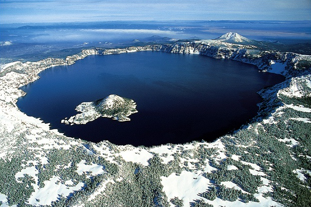
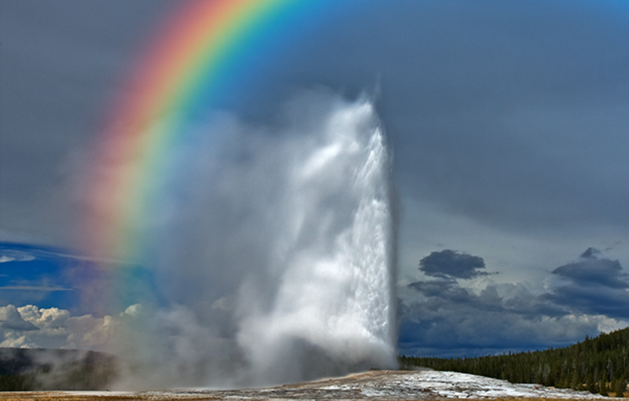
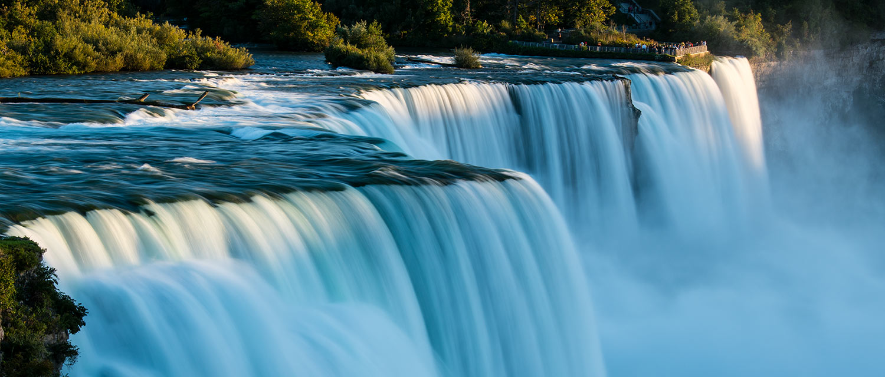
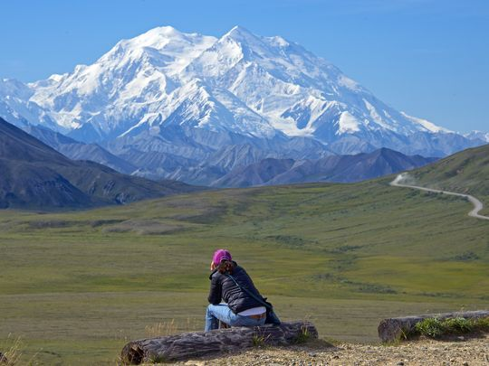

7 Natural Wonders of the U.S.A.
Ben Lawrence, lawrenbe@oregonstate.edu Oregon State University
The 7 Natural Wonders of the U.S.A
Historians deem that the 7 wonders of the ancient world are as follows: The Pyramids of Giza, The Mausoleum at Halicarnassus, The Hanging Gardens of Babylon, The Colossus of Rhodes, Lighthouse of Alexandria, The Temple of Artemis at Ephesus, and The Statue of Zeus. These feats of human engineering and artistry amazed viewers for decades. However, they were not built to last. Today, only one remains. This list documents the greatest natural, unfleeting wonders that any American can visit without a passport. Come tour the U.S. and witness the beauty that nature endowed upon us.
The Grand Canyon, Arizona
The Grand is a steep-sided canyon carved by the Colorado River in the U.S. state of Arizona in North America. It is contained within and managed by Grand Canyon National Park, the Kaibab National Forest, Grand Canyon-Parashant National Monument, the Hualapai Tribal Nation, the Havasupai people and the Navajo Nation. President Theodore Roosevelt was a major proponent of preservation of the Grand Canyon area, and visited it on numerous occasions to hunt and enjoy the scenery.
The Grand Canyon is 277 miles (446 km) long, up to 18 miles (29 km) wide and attains a depth of over a mile (6,093 feet or 1,857 meters). Nearly two billion years of Earth's geological history have been exposed as the Colorado River and its tributaries cut their channels through layer after layer of rock while the Colorado Plateau was uplifted. While some aspects about the history of incision of the canyon are debated by geologists, several recent studies support the hypothesis that the Colorado River established its course through the area about 5 to 6 million years ago. Since that time, the Colorado River has driven the down-cutting of the tributaries and retreat of the cliffs, simultaneously deepening and widening the canyon.

Zion National Park, Utah
Zion National Park is located in the Southwestern United States, near Springdale, Utah. A prominent feature of the 229-square-mile (590 km2) park is Zion Canyon, which is 15 miles (24 km) long and up to half a mile (800 m) deep, cut through the reddish and tan-colored Navajo Sandstone by the North Fork of the Virgin River. The lowest elevation is 3,666 ft (1,117 m) at Coalpits Wash and the highest elevation is 8,726 ft (2,660 m) at Horse Ranch Mountain. Located at the junction of the Colorado Plateau, Great Basin, and Mojave Desert regions, the park's unique geography and variety of life zones allow for unusual plant and animal diversity. Numerous plant species as well as 289 species of birds, 75 mammals (including 19 species of bat), and 32 reptiles inhabit the park's four life zones: desert, riparian, woodland, and coniferous forest. Zion National Park includes mountains, canyons, buttes, mesas, monoliths, rivers, slot canyons, and natural arches.
Crater Lake, Oregon
Crater Lake is a caldera lake in south-central Oregon in the western United States. It is the main feature of Crater Lake National Park and is famous for its deep blue color and water clarity. The lake partly fills a nearly 2,148-foot (655 m)-deep caldera[2] that was formed around 7,700 (± 150) years ago by the collapse of the volcano Mount Mazama. There are no rivers flowing into or out of the lake; the evaporation is compensated for by rain and snowfall at a rate such that the total amount of water is replaced every 250 years. With a depth of 1,949 feet (594 m), the lake is the deepest in the United States. In the world, it ranks tenth for maximum depth, and third for mean (average) depth.
The Klamath tribe of Native Americans, whose ancestors may have witnessed the collapse of Mount Mazama and the formation of Crater Lake, have long regarded the lake as a sacred site. Their legends tell of a battle between the sky god Skell and the god of the underworld Llao. Mount Mazama was destroyed in the battle, creating Crater Lake, called giiwas in the Klamath language. The Klamath people used Crater Lake in vision quests, which often involved climbing the caldera walls and other dangerous tasks. Those who were successful in such quests were often regarded as having more spiritual powers. The tribe still holds Crater Lake in high regard as a spiritual site.
Yellowstone National Park, Wyoming and Montana
Yellowstone National Park was established by the U.S. Congress and signed into law by President Ulysses S. Grant on March 1, 1872. Yellowstone was the first National Park in the U.S. and is also widely held to be the first national park in the world. The park is known for its wildlife and its many geothermal features, especially Old Faithful Geyser. It has many types of ecosystems, but the subalpine forest is the most abundant. It is part of the South Central Rockies forests ecoregion.
Native Americans have lived in the Yellowstone region for at least 11,000 years. Yellowstone National Park spans an area of 3,468.4 square miles (8,983 km2), comprising lakes, canyons, rivers and mountain ranges. Yellowstone Lake is one of the largest high-elevation lakes in North America and is centered over the Yellowstone Caldera, the largest supervolcano on the continent. The caldera is considered an active volcano. It has erupted with tremendous force several times in the last two million years. Half of the world's geothermal features are in Yellowstone, fueled by this ongoing volcanism. Lava flows and rocks from volcanic eruptions cover most of the land area of Yellowstone. The park is the centerpiece of the Greater Yellowstone Ecosystem, the largest remaining nearly-intact ecosystem in the Earth's northern temperate zone
Niagra Falls, New York
The Niagara Falls are famed both for their beauty and as a valuable source of hydroelectric power. Balancing recreational, commercial, and industrial uses has been a challenge for the stewards of the falls since the 19th century.
Niagara Falls were formed when glaciers receded at the end of the Wisconsin glaciation (the last ice age), and water from the newly formed Great Lakes carved a path through the Niagara Escarpment en route to the Atlantic Ocean. While not exceptionally high, the Niagara Falls are very wide. More than six million cubic feet (168,000 m3) of water falls over the crest line every minute in high flow, and almost four million cubic feet (110,000 m3) on average.
Redwood National and State Parks, California
The Redwood National and State Parks (RNSP) are old-growth temperate rainforests located in the United States, along the coast of northern California. Comprising Redwood National Park (established 1968) and California's Del Norte Coast, Jedediah Smith, and Prairie Creek Redwoods State Parks (dating from the 1920s), the combined RNSP contain 139,000 acres (560 km2).[3] Located entirely within Del Norte and Humboldt Counties, the four parks, together, protect 45% of all remaining coast redwood (Sequoia sempervirens) old-growth forests, totaling at least 38,982 acres (157.75 km2). These trees are the tallest and one of the most massive tree species on Earth. In addition to the redwood forests, the parks preserve other indigenous flora, fauna, grassland prairie, cultural resources, portions of rivers and other streams, and 37 miles (60 km) of pristine coastline.
Denali, Alasksa
Denali is the highest mountain peak in North America, with a summit elevation of 20,310 feet (6,190 m) above sea level. With a topographic prominence of 20,156 feet (6,144 m) and a topographic isolation of 4,629 miles (7,450 km), Denali is the third most prominent and third most isolated peak after Mount Everest and Aconcagua. Located in the Alaska Range in the interior of the U.S. state of Alaska, Denali is the centerpiece of Denali National Park and Preserve.
The Koyukon people who inhabit the area around the mountain have referred to the peak as "Denali" for centuries. In 1896, a gold prospector named it "Mount McKinley" in support of then-presidential candidate William McKinley; that name was the official name recognized by the United States government from 1917 until 2015. In August 2015, following the 1975 lead of the state of Alaska, the U.S. Department of the Interior announced the change of the official name of the mountain to Denali. Prior to this, most Alaskans already referred to the mountain as Denali.
